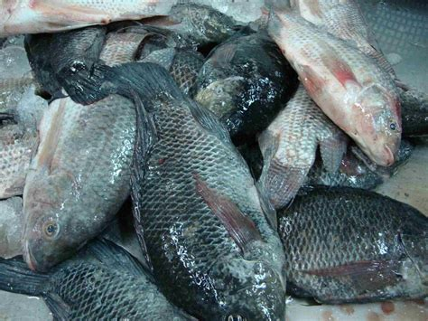
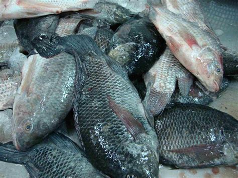

Consommons Produits Togolais
Legumes
 

Prendre soin de sa sante c'est aussi bien mange.Nous vendons des lettue qui sont bien traite por contribuer au bien etre de notre population.
Lettue
Prendre soin de sa sante c'est aussi bien mange.Nous vendons des lettue qui sont bien traite por contribuer au bien etre de notre populationCarotte
 Prendre soin de sa sante c'est aussi bien mange.Nous vendons des lettue qui sont bien traite por contribuer au bien etre de notre population
Prendre soin de sa sante c'est aussi bien mange.Nous vendons des lettue qui sont bien traite por contribuer au bien etre de notre population